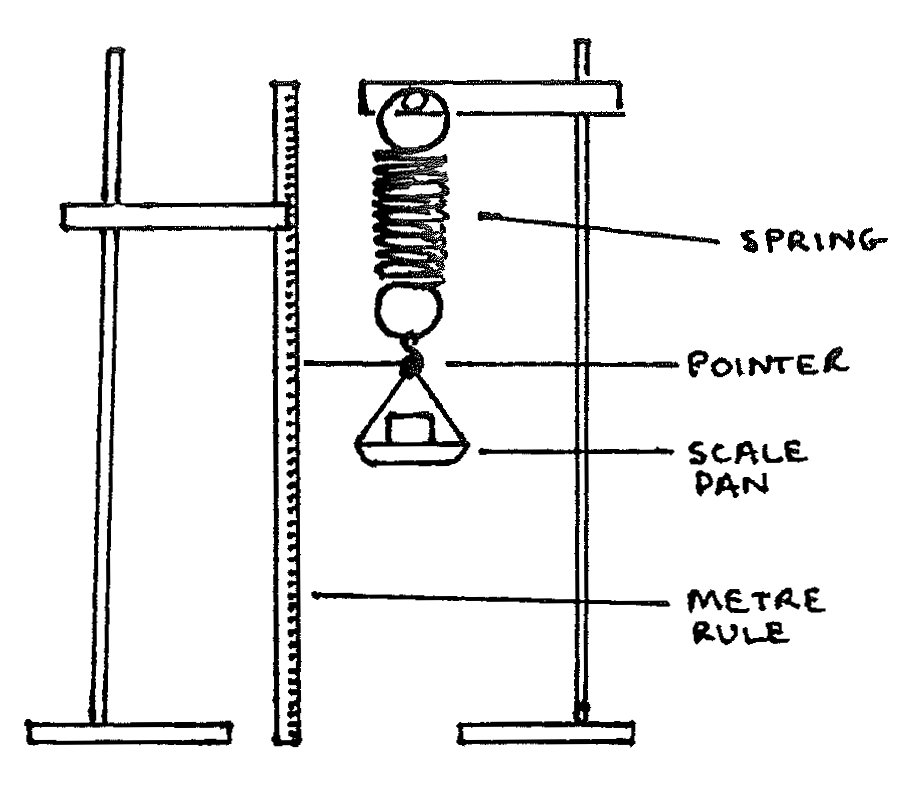
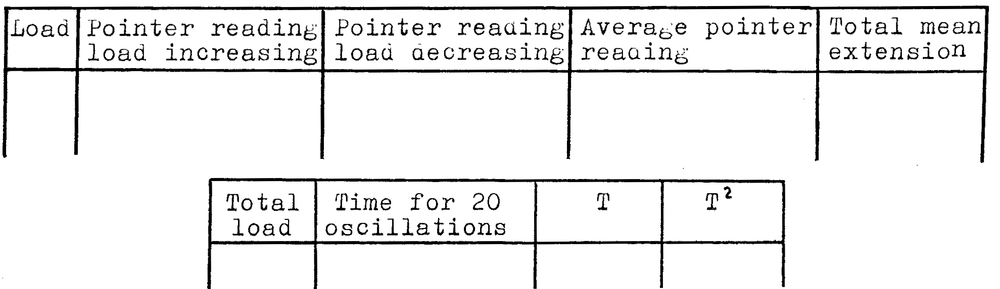

B5-2: Experiments Using a Spiral Spring¶
Apparatus¶
2 stands with clamps; metre rule; spiral spring; scale pan with attached pointer; stopwatch; assorted masses \(5\text{g}\) to \(100\text{g}\); 2 sheets of graph paper; triple beam balance

Procedure¶
- Measure and record the mass of the scale pan and attached pointer. Attach the pan and pointer to one stand and place the metre rule in the other stand such that the end of the pointer moves lightly over it. Read and record the pointer position. This is the zero position.
- Put \(5\text{g}\) in the pan and record the total load (including the mass of the pan and pointer) and the pointer position.
- Put \(10\text{g}\) more into the pan and record the position of the pointer and the total load on the spring. Continue adding \(10\text{g}\) increments of mass until \(95\text{g}\) has been added. Record the total load and pointer position each time.
- Once you have reached \(95\text{g}\) remove \(10\text{g}\) at a time and record the total load and the pointer position each time. This will give you two readings for every load except at \(95\text{g}\).
- Use the readings in your data table to find the total mean extension for each load by subtracting the zero position pointer reading (from 1.) from the average pointer reading for each load. Write this in your table.
- Put \(50\text{g}\) into the scale pan then set it in vertical oscillations by lifting it slightly above the equilibrium position then quickly letting go. Time 20 complete oscillations to find the periodic time, \(T\), where \(T = \frac{\text{time for 20 oscillations}}{20}\).
- Repeat Procedure 6 with \(100, 150, 200, \text{ and } 250\text{g}\). Be certain to include the mass of the pan and pointer in your tabulation of total load on the spring.
Observations¶
Mass of scale pan and pointer = ________ g
Zero position of pointer = ________ cm (also record in data table)
Tabulate:

Theory¶
Hooke’s Law predicts that when the spring experiences elastic deformation due to a load the extension is linearly proportional to the load: \(F = -kx\). When a mass, \(M\), attached to the spring extends the spring by a distance, \(x\), there is a restoring force \(Mg = \frac{x}{n}g\), where \(n = \frac{\text{extension}}{\text{load}}\) (n is the slope of the first graph you will draw), and \(g\) is the acceleration due to gravity.
The oscillations of the spring are simple harmonic and obey the equation of motion \(Ma = -\frac{x}{n}g\) or, \(a = -\frac{g}{Mn}x\). Using calculus, \(-\frac{a}{x}\) can be expressed in terms of the angular frequency \(\omega\) such that:
The above assumes that the spring is weightless. In reality the spring has an effective mass, \(m\), which changes the equation for T:
From a graph (you will draw) of \(T^2\) vs. \(\text{load}\), \(g\) and \(m\) can be found:
The \(x\)-intercept of the \(T^2\) vs. load graph gives the effective mass, \(m\), of the spring.
Analysis¶
- Plot a graph of total mean extension vs. load. Find the slope, \(n\), of the graph and the \(x\) - intercept. Use SI units.
- Does this first graph verify Hooke’s Law?
- Plot a graph of \(T^2\) vs. load. Fine the slope and the \(x\) - intercept.
- Use the slope of your graph to solve for \(g\). Does the value you obtain for \(g\) agree with your expected value of nearly \(9.8\text{m/s}^2\)? If there are differences try to explain them.
- What is the value you predict for the effective mass, \(m\), of the spring?